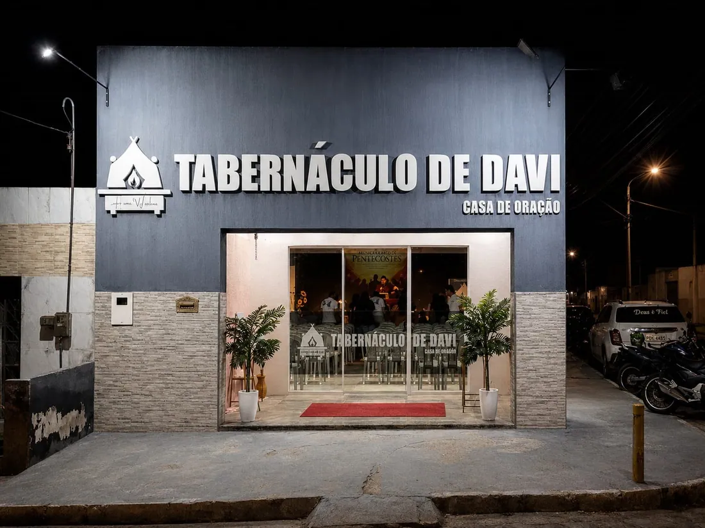
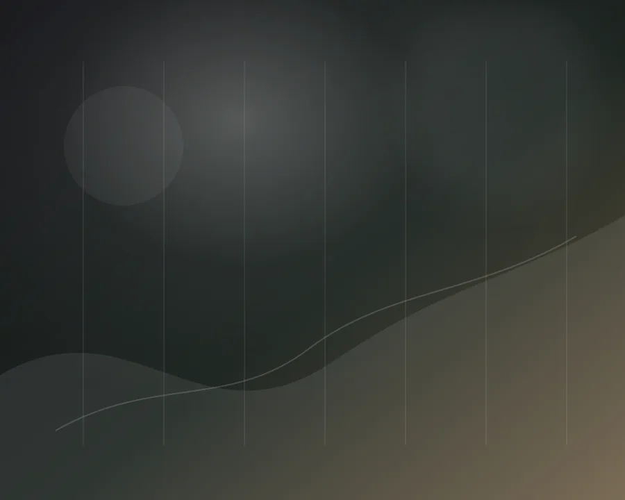
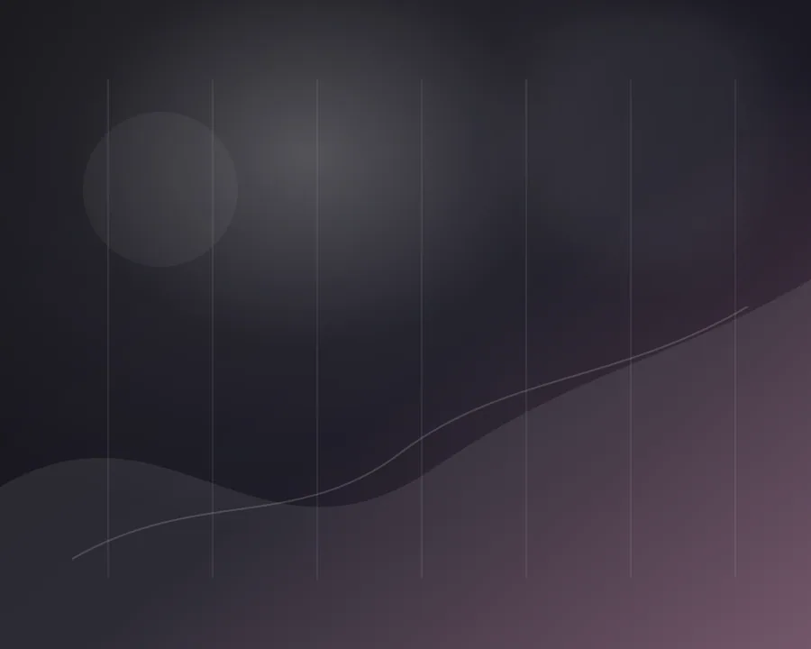

Culto de oração
19h30
Casa de oração e adoração
Uma comunidade ativa e forte para viver o IDE de Jesus, acolher famílias e conduzir vidas à presença de Deus.
Reúna sua família e participe conosco dos cultos da semana. Será uma alegria receber você para momentos de oração, Palavra e adoração.
19h30
19h30
15h00
18h00
Estamos no bairro Salgado, em Caruaru. Abra a rota pelo mapa e venha nos visitar com tranquilidade.
Use o botão abaixo para abrir a localização oficial da igreja e compartilhar a rota com quem vai participar do culto com você.

O Tabernáculo de Davi é uma casa de oração e adoração dedicada a obedecer ao IDE de Jesus com amor, verdade e presença de Deus.
Somos uma comunidade que acolhe visitantes, fortalece famílias, forma discípulos e permanece ativa em intercessão, evangelismo e serviço.
Ver missão, visão e valoresConheça os princípios que conduzem a igreja em oração, adoração, discipulado e serviço ao Reino de Deus.
A missão da igreja é proclamar o evangelho até os confins da Terra, vivendo o chamado de Mateus 28:19-20 com intensidade e amor.
A visão do Tabernáculo de Davi é restaurar o altar da oração e da adoração contínua, conforme o modelo bíblico de Amós 9:11 e Atos 15:16.
Nossa liderança pastoral caminha junto da igreja com cuidado, direção espiritual e compromisso com a Palavra.
Liderança pastoral com foco em Palavra, direção espiritual e edificação da igreja.
Referência de cuidado, apoio ministerial e fortalecimento da comunhão entre as famílias.
Espaços de comunhão, serviço e crescimento espiritual para crianças, jovens, famílias e ministérios da igreja.
Comunhão, discipulado e fortalecimento espiritual para a nova geração.
Como participar
Comunicação visual, cobertura dos eventos e apoio na divulgação da igreja.
Entrar em contato
Expressão artística com mensagens inspiradoras para eventos, ações especiais e evangelismo.
Como participarMinistério de adoração liderado por Diego Nunes, dedicado a conduzir a igreja com excelência e sensibilidade.
Entrar em contatoMinistério infantil liderado por Aline Nunes, com cuidado, ensino bíblico e atenção às crianças da igreja.
Como participarUm tempo para crer no agir de Deus, romper correntes e viver a liberdade que há em Cristo.
“Se, pois, o Filho vos libertar, verdadeiramente sereis livres.”
João 8:36
Entre em contato, acompanhe os comunicados oficiais e encontre orientações para participar dos cultos e ministérios.
Enquanto o WhatsApp oficial é atualizado, fale com a igreja pelo Instagram e acompanhe os comunicados por lá.
Abrir InstagramUse este canal para pedidos de informação e agendamentos.
Enviar e-mail tabernaculodedavicaruaru@gmail.comAcompanhe notícias, programações e comunicados da igreja nas plataformas oficiais.